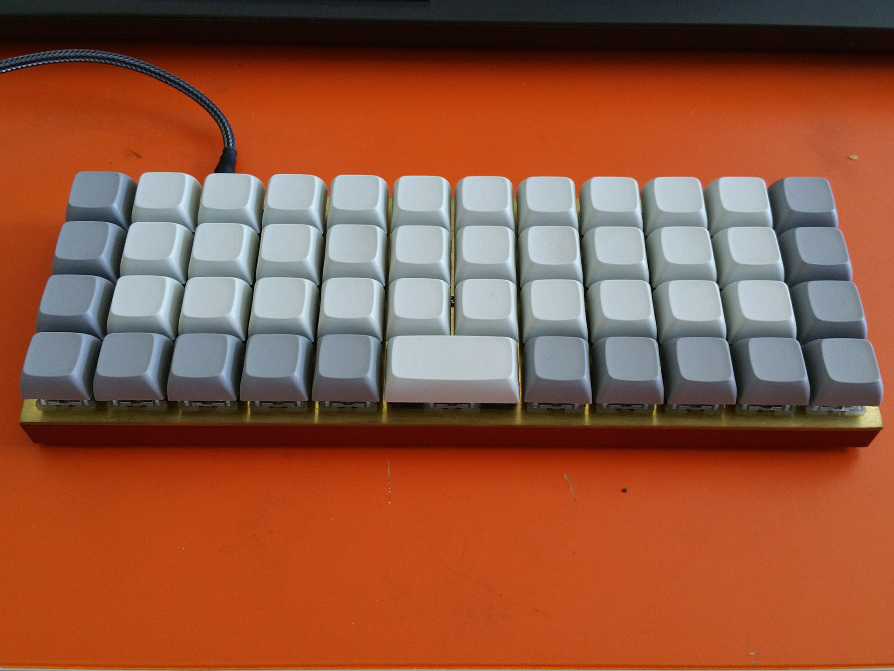

keyboards
I bought my first mech, a CoolerMaster QuickFire Rapid Stealth, in 2012. It was a fairly nice and (relatively) affordable keyboard which I used for many years. Steel plate, solid construction, and Cherry MX Blue switches. I started browsing r/mk in 2016, and began to explore other layouts, switches, cases, and plates.
Since then, I have experimented a little more with layouts, as well as modifying or building my own boards; My most current mechs, the Planck and Nyquist, were built entirely from kits, and I have heavily modified the QFR, Anne Pro, and Pok3r.
Current Boards:

OLKB Planck | Brass Plate | Red Alu Case | 65g Zealio | XDA Blank
This is my favorite board at the moment, and my most used one. It took a few weeks to adjust to typing on an ortho board, but I've benefited greatly from the added thumb keys, and layer configuration possible via QMK. I'm faster inputting numbers here than on a more conventional 60% or TKL, since I have a layer that functions as a numpad. The size of it makes it suitable as a portable board, and the lubed 65g zealios are quiet enough for library use. I currently have Devlin Q-series Skidata keycaps on it, which are probably my favorite style and profile.
Keeb.io Nyquist | Lasercut 4mm Acrylic | Kailh BOX White | DSA Blank
I'm fairly certain that the Nyquist is my ideal layout. Ortho is great to type on, and having it split means my wrists can always be in a comfortable position (these are images of the two halves). However, I've been experiencing some hiccups that are likely a product of latency / communication issues between the two halves, such as messing up my mods and having some inconsistency with shifting layers. The Kailh BOX White switches are pleasant, but the clicking is a little high-pitched for me. I sanded down the acrylic plate/top in the hopes that it would diffuse RGB underglow, but I wish I'd just left it clear. For split boards, the user is faced with a choice between underglow, and I2C, which reduces latency between the halves. Since I'm already having latency issues, I chose to skip on the RGB.
Anne Pro | Cherry MX Clear x Gateron RGB | Currently FS
The Anne Pro is a 60% keyboard; a board without F-keys, nav cluster, or numpad. For most people, that's about as small or exotic as you'd want your layout to get. It's an RGB keyboard, and has bluetooth compatibility, which makes it a nice on-the-go board for a phone or tablet. The modification I made was one in which I replaced the innards of the switches (gateron brown) with Cherry MX Clear stems and springs. Normally, there's no such thing as an RGB-compatible MX Clear, so I made use of the Gateron housings that came stock on the board. This produced an RGB compatible MX Clear that feels smoother and lighter than stock, due to the manufacturing differences between Gateron and Cherry switches.
QFR Stealth | J-Spacer x MX Blue | Stickerbomb
The QuickFire Rapid Stealth was the first mechanical keyboard I purchased msyelf. I had used an old Dell mech (at least, I think it was mechanical- probably ALPS) for many years, and some of the keys were failing on me. The QFR was appealing because of its all-black styling, the side-printed keycaps, and the Cherry MX Blues, my first clicky switches. Since then, I've modified it heavily. I added stickers to the case, and modified the switches by adding in "J-spacers", which silence the click, reduce keytravel, and pad the bottom-out. I'm ambivalent about the mod, as it makes for a mushier typing experience. Lube might fix it for me (I've tried j-modded lubed switches before, and they felt fairly close to "topre" switches), but that would involve desoldering the entire board again, so I've left it as is. I'm pretty much exclusively using ortho boards, anyways. The other mod I might try is adding a custom controller for QMK compatibility, if I ever feel like shelling out more cash.
Previously Owned:
Sentraq S65-X | 65g Gatistotle | OEM PBT Blank
This was my first group buy. It's an S65-X, which is a 60% + arrow keys, and a minimal nav cluster. What you see here is the unassembled kit: switches, PCB, case (which includes a top plate), and stabilizers. I built it up with 65g Gatistotles, which are "Aristotle" switch stems inside of Gateron housings. They're quite labor intensive to make, but are also the finest MX-style clicky switches I've tried. They have a bit of a meatier, longer, lower pitched click than the BOX Whites or MX Blues. Really nice board, and my first experience with underglow, but I got my Planck soon after, and figured it was too expensive to keep around if I wasn't using it. Ended up selling it.
Vortex Pok3r RGB | Zealio x RGB MX | DSA Granite
My first mech after getting back in the game on r/mk. The Pok3r is one of the most recommended and most popular boards on the sub, and for good reason. It's around $100, with amazing build quality and PBT stock keycaps. Of particular note is the case, which is made out of cast aluminum and feels indestructible. It's a fairly heavy keyboard for its size, which is reassuring and satisfying, but not ideal for travel. I modified it by opening up the MX Brown switches and swapping the stem for Zealio stems that I'd gotten on r/mechmarket for fairly cheap. The keycaps on this board are DSA Granite, an extremely popular aftermarket set manufactured and sold by Signature Plastics. I liked the DSA profile and PBT texture a lot, but ended up parting with the keyset and board in order to fund my S65-X